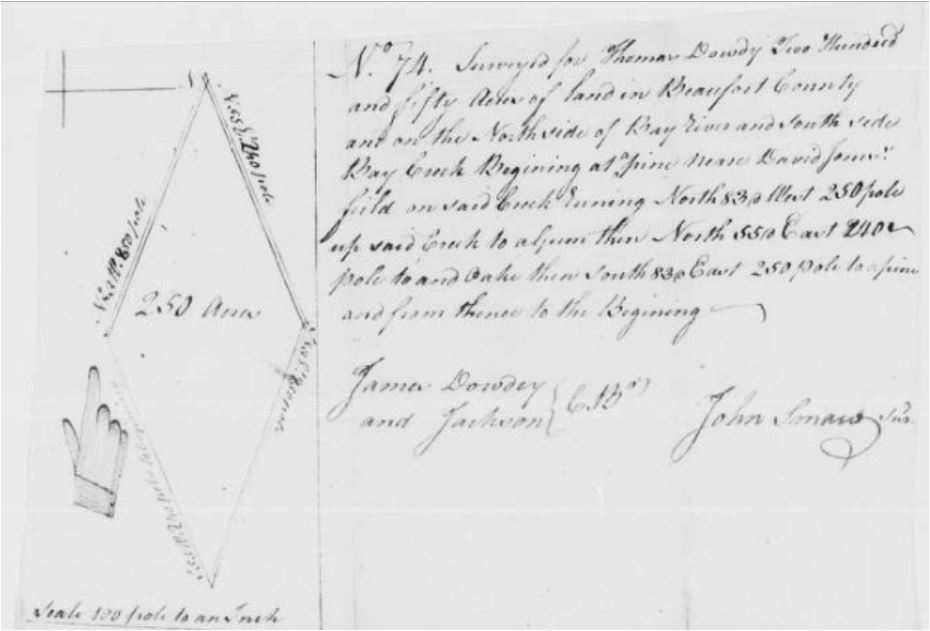

|
 1760s 1760s
c1765- [in pencil] "prior to 1765?"... Superannuated:
Ths. Dowdy [abstractor's comments: "appears to be
a list of men too old or infirm to serve in militia . from military
collection Mil TR.2-23 State Archives"]
1770s
1770 NC Land Grants - to John Dowdee 150 acres
Jul. 7, 1770 - Bk. 4, pg. 347-348 - recorded July Court 1770
James Dowday bought from John Avery, 250 acres for L5
lawful money of NC, the whole messuage or tenement of land beginning
at Wm. Carruthers corner near the head of Bear Creek, at upper
end of Caton's old field, running along Carruthers line to a
stake near the road opposite John Clashe's Plantation, then into
the Dismal, along Jones line to the beginning. James Dowday to
pay annhually the Quit rents due to the King. Witnesses: Joseph
Cary, John Tellman, and Littleton Bell
Sep. 3, 1774 Bk. 4, pg. 452-453 - recorded March term 1775
James O. Dowday bought from Shadrac Emery & Sarah
Emry, 50 acres for L10 Proclamation money, all that messuage
or tenement of land on north side of Bay River & east side
of Great Bear Creek, beginning at a corner of Wm. Carruthers
300 acre patent, along lines of Patent to Stanger's line, to
the Creek, with the creek to the beginning. Witnesses: David
Jones, Thomas Goodman, and Richard St..?..ing.
Note: This land is near the mouth of
the Bay River, today Pamlico Co. Bear Creek runs toward today's
Beaufort Co Line on the north side of Bay River
1775 - Land Grant to James Dowdy - Acres: 300 Grant
Number: 42 Issued: Feb. 28, 1775 Book, Page: 26:176
Location: On the north side of Bay River on chad Mask's Creek
[another source: "living there"]
1779 Beaufort Taxables
Charles Leath, Sampson Leath & Benjn Ballancy's Assessments
for their District [note: the Dowty family are taxed in another
district]
Billy Dowdy 421 ac tax/11
Thomas Dowdy 434 ac tax/6
James Dowdy Sr 100ac tax/pole
1780s
1781 Beaufort Militia A List of the Several Divisions of Affective
Men in the Beaufort Ragiment of Militia Made the 20th of April
1781
William Dowdy
A List of the Superanuated & Invalids of the Regiment
belonging to Beaufort County Regiment of Militia for 1781. Wm.
Brown, Colo [list of superannuated, meaning too old, invalids]
Ths. Dowdy
1784 Land Grant to Thomas Dowdy - Acres: 250 Grant
Number: 163 Issued: Oct. 27, 1784 Book, Page: 55:271 Location:
On the North side of Bay River and South side of bay Creek;
cc: James Dowdy "and Jackson"

See Plat at NC Land Grant Database - Frame
888
1784 Beaufort List of Taxables
Capt Leath's Company
Thos Dowdey 200 ac Beaufort Co 1 wh 0 bl; tax: L166.13.4
James Dowdey 500 ac Beaufort Co 1 wh 0 bl; tax L266.13.4
1787 Craven Co NC New Bern District Superior Court Civil Actions
Folder: 1788 - Information: Summons for John Smaw to appear
and testify on behalf of Thomas Dowdy in a suit in which David
Jones is plaintiff and Dowdy is defendant. Date: 20 Nov 1787
Date of: Summons County: Beaufort
1789 Beaufort List of Taxables
Capt Jones' District
James Dowdy 500 ac 1 poll
William Dowdy 1 poll
Elisha Dowdy 1 poll
1790s
1790 Beaufort Census
Elijah Dowdy 1 0 2 0 0
James Dowdy Jr 2 3 5 0 0
James Dowdy Sr 1 0 1 0 0
John Dowdy 2 2 5 0 0
Samuel Dowdy 1 0 0 0 0
Samuel Dowdy 1 0 0 0 0
Thomas Dowdy 1 0 2 0 0
William Dowdy 1 0 3 0 0
3 Aug 1791. Will of JohnnCurtis. Wit: Samuel Dowdy
3 Nov 1795. Will of William Harris. Wit: Whinney Dowdy
1800s
1800 Beaufort Co Census
No Dowdys. However Left bottom of pages are obliterated
including the alphabetical "D" page, households with
first names James, Billy, John and William, and 3 more household
completely obliterated. These are "D" surname families
because the alphabetical "D's" list continues on the
top of the next page. Note: Dowtys are visible in the middle
of the page.
1806 Orphan Book A pg 172 - Acct of sales of the estate of
the late Wm Potter March 11th 1806 [list of buyers] Jno
Dowdy
1809 Orphan Book A pg 90 - Ann acct of sales of the Estate
of the late James Everette dec'd March 22nd 1809 [list
of buyers] Jas. Dowdy
1810s
1810 Beaufort Co. Census
Jas. Dowdy 02010 - 12100
12 Oct 1815 Orphan Book A pg 246 - Will of Joseph Campen Sr.
"...cows at James Dowdy pen..."
1815 June 5 Beaufort Co NC - Original Will of Manuel Dowdy
- In the name of God amen - I Manuel Dowdy of the state
of North Carolina and county Beaufort, being weak and low
in health but of sound mind and memory do make this my last will
and testament in manner and form following to wit - Item I give
and bequeath to my Sister Sallie Dowdy of Craven County
all of my hogs to her and her heirs forever. Item 2nd I give
and bequeath to cousin James Dowdy all of my land lying in
Craven County on the North Side of Bear Creak Run to him
and his heirs forever - and lastly I nominate and appoint
my cousin James Dowdy executor of this my last will and testament
hereby revoking and disallowing all former wills by me made ratifying
and confirming this and no other to be or contain my last will
and testament - In witness whereof I have hereunto set my hand
and seal this 5th of June 1818 <mark> Manuel Dowdy
Wit: Benj Campen, Hillery Dowdy. Probated September Term
1818. Recorded Orphan Book A pg 290 (LDS Film # 004772508 image
414)
September Term 1818. of the County Court of Beaufort. There
was this Will proven in Court in due form of Law by the Oath
of Benj'n Campen a Witness thereto - and ordered to be Recorded
- and James Dowdy came into Court and Qualified as Ex’
or thereto. Tho. Smaw C.
1819 Beaufort Co NC Tax List - Goose Creek District (only)
Hillery Dowdy (no land taxed) 1 wh poll 0 blk poll
James Dowdy 327 ac 0 wh poll 0 blk poll
Goose Creek area of Beaufort Co became
Pamlico Co in 1875
1820s
1820 Beaufort Census
James Dowdy 000101 - 11210
1824 Orphan Book A pg 399 - Acct of sales of the property
of John Slade dec'd sold by Jesse Whitley adm on 12th
day of March 1824 [list of buyers] Saml. Dowdy
1825 C. R. X. Box 145 - Estate Box: James Dowdy
28 Apr 1836 Will of Daniel Lewis. "...including the woodling
land and plantation where James Dowdy lived and died..."
1830s
1830 Beaufort Census
Zach Dowdy 0000100000000 - 0000100000000 (slaves 1,
free 1) Town of Washington
1850s
20 Sept 1853. Will of Wm Sears. Wife Sally Sears. Sarah
Jane Dowdy, under age, all the rest of estate. William
W. Dowdy under age, bed. "Desire as that Henery T.
Dowdy's name shall not be taken as principal or security
to any note."
Deeds Bizarre early "2-3"
index vols don't match the actual deed books
Many of these people appear in next
door Craven County records
Grantors
James Dowday to William Dowday Sep 1796 7/291 (found) 50 ac
James Dowday Sr to James Dowday Jr Sep 1796 7/293 (found) 50
ac "to my son"
James Dowdey to Jesse Dowdey Dec 1800 2-3/388 book
2-3 does not exist at LDS
James Dowday to William Dowday Jun 1801 2-3/142
Elijah, Isabell, Samuel Dowday to William Dowday Sr Jun 1801
2-3/332 (this is not 7/332 or 8/332)
Samuel Dowday to Elijah Dowday Sep 1801 2-3/124
William and Margaret Dowdy to John Linton Sep 1816 11/351
James Dowdy to John Gray Blount May 1821 13/138
Richard and Betsy E Dowdy to Noah Gaskill Feb 1823 15/336
James Dowdy to Daniel Ireland Feb 1826 13/520
Hillery Dowdy to Benjamin Lewis Sep 1838 19/425
Cassander Dowdy to Wm Potter Dec 1843 22/159
Tilman H Dowdy to Jas Pairtree Sep 1851 26/359 bill of sale
Grantees
James O Dowday from Shadrac Emery et ux Mar 1775 4/452
Thomas Dowdy from State of NC June 1785 5/419
John Dowdey Sr from Francis Delamar June 1794 7/63
William Dowday from James Dowday Sep 1796 7/291
James Dowday Jr from James Dowday Sr Sep 1796 7/293
Jesse Dowdey from James Dowdey Dec 1800 2-3/388 book
2-3 does not exist at LDS
William Dowday from James Dowday Jun 1801 2-3/142
William Dowday Sr from Elijah Dowday et al Jun 1801 2-3/332
James Dowdy from William Dowdey June 1801 2-3/351
Samuel Dowdy from Elijah Dowdy Sep 1801 2-3/86
Elijah Dowdy from Samuel Dowdy Sep 1801 2-3/124
James Dowdy Jr from Simon Fortisque Jun 1802 2-3/585
James Dowdy from William Davis Mar 1809 8/58
James Dowdy from Wm Shaw sheriff May 1821 13/138
James Dowdy from Zacheus Linton Nov 1822 15/269
James Dowdy from Jesse Robason Feb 1825 16/184
Zachariah Dowdy from William W White Aug 1829 15/126 bill of
sale
Henry Tilman Dowdy from John A Moore Sep 1852 27/152 (note prior
deed is Dowty but clearly the same guy)
James R Dowdy from John Credle Sep 1854 28/499
Nancy Dowdy from John Moore et ux Mar 1856 29/175
Dowdys mentioned in "Beaufort County Will Abstracts 1720
- 1868"
Name, page number
Dowdy, Henery T., 286
Dowdy,Hillory, 103
Dowdy,James, 62,103,212
Dowdy,Manuiel. 103
Dowdy,Salle, 103
Dowdy,Samuel, 92
Dowdy,Sarah Jane, 286
Dowdy,William W., 286
Dowdy,Winney, 160
Information Probably Relating to the Dowty Family
Note: Rev. Elisha Dowty of Beaufort is documented as the
son of Peter Dowty of Accomack/Northampton County Virginia. That
family is well documented as "Dowty" and not "Dowdy".
However, a James Dowdey listed in Beaufort is likely part of
the Currituck branch of "O'Dowdeys".
Bk. 4, pg. 13 - dated Mar. 23, 1763 - recorded June Session 1763
Elisha Dowty, late of Accomack Co VA, from William Peyton, 400
acres for 70#'s current money of VA, a piece of land on west
side of Durhams creek at mouth of Browns run, up said run to
Charles Prescots line, down Prescots line to mouth of Prescots
Gut, then down Durham's creek to the beginning. Witnesses: Henry
Lockey & Thomas Bonner Jr.
Bk. 4, pg. 12 - dated Mar. 31, 1763 - recorded June Session
1763 Elisha Dowty, late of Northhampton Co, VA, from William
Peyton, 500 acres for 30#'s proclamation money, a parcel of land
in Beaufort Co on west side of Durham's Creek, beginning at mouth
of Tar swamp, running up swamp to back line of Elisha Dowty's
corner to Shop branch, then with Prescot's line to Durhams creek,
with Durhams creek to the beginning. Witnesses: Reed Fletcher
& Thomas Bonner (In the previous deed signed just a week
earlier, he was "of Accomack Co VA"!)
Bk. 4, pg. 243-244 - dated Apr. 29, 1763 - recorded October
term 1769 Elisha Dowty sold to John Prescot, 300 acres for 40#'s,
a parcel of land on west side of Durhams creek, beginning at
mouth of Sink Swamp on south side, down swamp to the back line
and with the back line to Elisha Dowtey's corner, down Charles
Prescots line to Durhams creek, to the beginning. Witnesses:
John Whitingham, Stephen Burch, & William Daw
Bk. 4, pg. 512-513 - dated Dec. 31, 1777 - recorded March
term 1778 Elisha Doubty bought from Thomas Rispess, 300 acres
for 75#'s Proclamation money, all that Plantation or parcel of
land beginning at Gum on the east side of the little Pocoson,
S.10 degrees east 180 poles, south 80 west 160 poles, west 10
north 260 poles, north 80 east 185 poles to the beginning. Witnesses:
Bensury Bernard and Winifred Cowper.
August Session 1830
Court so ordered as Levi Dowty had petitioned. Land was divided
thus:Lott #1 to Stephen Dowty, begins on Durhams creek at mouth
of a gut, marked trees in Cooper Kiln, small island called Turnip
Patch in Durham's Creek - 197 acres Lott #2 to Levi Dowty, begins
at corner of #1 in the Cooper Kiln, to Durhams creek, to a gut
where Teagle Dowty lived, down creek to corner of #1, with line
of #1 to beginning - 200 acres Lott #3 to Elizabeth Dowty on
a corner of #2, to Brown's run, down run to Durham Creek, to
corner of #2, to beginning - 207 acres Lott #4 to Thomas Dowty
(description partly covered by Plat Map).....on deep branch running
line of the Patten, north to land purchased from Fleetwood, with
his line to corner on Cherry Pond, then to beginning - no acreage
shown Lott #5 to Charles Dowty begins at corner of #4 & Cherry
Pond, down line of #4 to Fleetwoods corner, down Fleetwood's
line to line of Patten, with Patten line to Teagle Dowty's corner,
then to beginning - no acreage shown'Lott #6 to Mary Eleanor,
included all land on south side of Browns Run, containing the
Plantation lands whereon said Dowty lived, that he purchased
from Charles Crawford. Lott #6 is also subject to the Widow's
Dower.
Sept 16 1830, jurors met to lay off and allot to Penelope Dowty,
widow of Thomas Dowty, deceased, her dower as life estate of
the real estate of her late husband, and allotted to the said
widow, all the land on sousth side of Browns Run agreeable to
a plat herein annexed, including the dwelling house and all the
out houses of said land (Equal to Lott #6)
Petitions & Divisions - #109 - August Session 1830
Levi Dowty petitioned court to divide land of his father, Thomas
Dowty who died intestate about July 1830. Other children, who
were minors, were: Thomas Dowty, Charles Dowty, Stephen Dowty,
Elizabeth Dowty and Mary Eleanor Dowty. Land was on west side
of Durhams creek, at Lewis's Gut, line of Crawford heirs' land,
lines of Robert Tripp, Nathan Archbell, John Dowty & others.
Matthew Shaw, Atty for Levi.
Petitions & Divisions - #106 - Feb 4, 1830
Court ordered Thomas Ellison, Charles G.Crawford & Joseph
Lewis, to divide three tracts of land belonging to the Estate
of John Dowty, dec'd, among his heirs - to wit: Wilson Dowty,
John Dowty, Levonia Dowty, Hillory Easters & wife Nelly Hannah
(Dowty), and Abner Jones & wife Lucretia (Dowty). All got
a 1/6 share, plus a 1/5 share of Sally Ann Dowty's 1/6. The land
was divided into 6 Lotts thus:
Lott #1 includes house whereon John Dowty lived, begins on west
corner on low Pitt Branch, Durham's Creek, mouth of Man Hut(?),
containing 33 acres, given to Hannah. (Nelly Hannah?)
Lott #2 begins at same point as Lott #1 running down Low Pitt
branch to Durhams Creek, down creek to line of Lott #1, up that
line to beginning, given to Abner Jones (Lucretia's husband)
Lot #3 includes land John Dowty purchased from George Wilson
& part of land purchased from Thomas Dowty, begins at White
Pond, north to line of Lott 1, south to eastern corner of Lott
#1, with Lott #1 to beginning, given to Wilson Dowty.
Lott #4 begins at south corner of land purchased of Thomas Dowty,
to edge of pond, with line of that deed to beginning, given to
Hillary Easters & wife
Lott #5 begins at old corner on Nevills Creek, down creek to
line of Lott #3,south to Lott #4, with that line to Pond &
corner of Lott #4, with that line to beginning, given to Lavenia
Dowty
Lott #6 begin at dividing line of Lott #5 Nevills Creek, down
creek to Archbell's corner, south- east to corner of Lott #3,
south to line of Lott #5, then to beginning, given to John D.
Dowty.((Apparently Sally Ann was another child of John Dowty,
but is also now deceased, so her share was divided among her
surviving siblings? But why did Nelly Hannah get Lott #1, AND
her husband, Hillory Easters, get Lott #4???)
|

 Beaufort
County
Beaufort
County